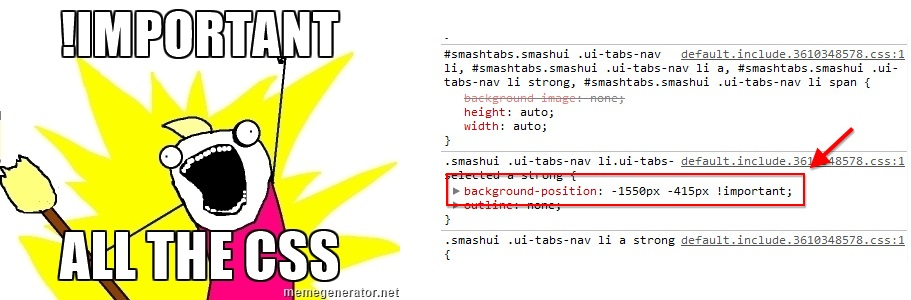
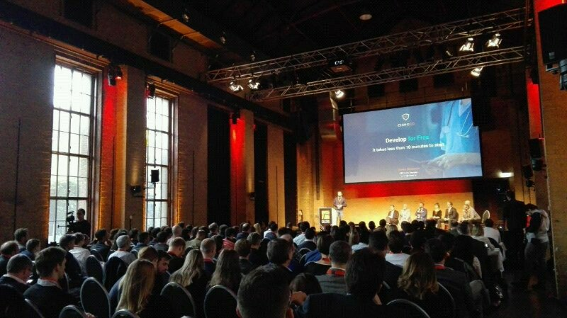
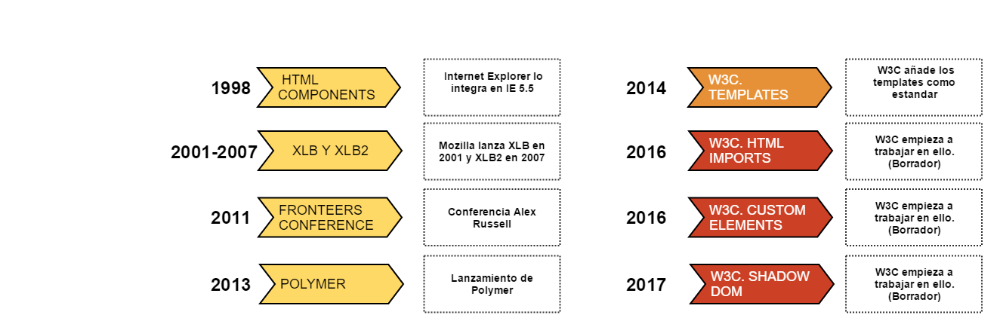
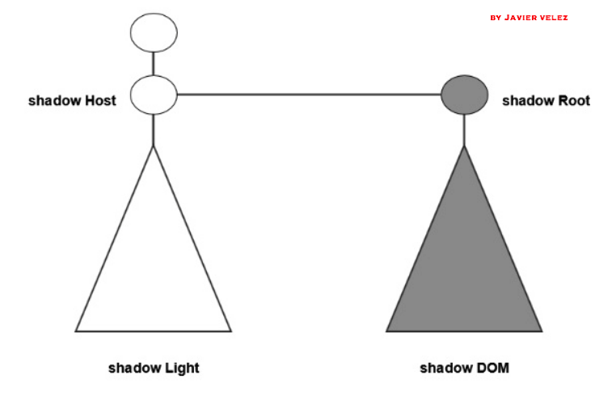

WebComponents
El futuro de la web
Rocio Muñoz / @roci_munoz
Rocio Muñoz

Indice
- 1.Situacion de la web
- 2.Evolucion Webcomponents
- 3.Que son los webcomponents
- 4.Demo
1. Situacion de la web
No tengo herramientas para solucionar problemas
Problemas de encapsulamiento
Iframes
!Important
Problemas de encapsulamiento
Iframes
!Important
Problemas de modularidad
Modularidad: División de una aplicación en partes mas pequeñas, "modulos"
No podemos crer módulos Html
Problemas de extensibilidad
Elementos básicos: div, span, p, table, form, h1 ...
¿Y si necesito elementos nuevos?
Problemas de reusabilidad
No podemos reutilizar código Html
Hay que usar frameworks javascript (mustache, underscore, handlebarjs, jade ..)
2. Evolución WebComponents
HTML Components
En 1998, Internet Explorer crea el concepto de Html Components
Ficheros .htc con métodos y propiedades
XLB
En 2001, Mozilla lanza el concepto de XLB
En 2007, lanzan XLB 2
WebComponents
En 2011, Alex Russell nombra en Frontiers Conference el concepto de Webcomponent
Polymer
En 2013, aparece Polymer como framework de ayuda en la creacion de componentes
W3C se pone a trabajar
En 2014, aprueban los templates como estandar
En 2016, comienzan a trabajar en el resto de estandares que forman WebComponents
Resumen Evolución
3. Qué son los webcomponents
Conjunto de estandares que nos permitirán enriquecer la web
- Shadow DOM : (encapsulamiento)
- Html Imports : (modularidad)
- Custom Elements : (extensibilidad)
- Templates : (reusabilidad)

!!! Todavia no están soportados en todos los navegadores !!!
Solución: Polyfills
Polyfill
Trozo de código o plugin que añade nuevas funcionalidades a navegadores que aún no tienen dicha funcionalidad
Soporte para webcomponents: webcomponents.js
Listado de polyfills : Modernizr, Html5Please
Ejemplo Polyfills

3.1 Shadow DOM (encapsulación)
ShadowDom proporciona un arbol Dom aislado ("sombra") dentro de un componente
Shadow Host: Es el nodo desde el que cuelga un shadowDom
Shadow Root: Nodo raiz del shadowDom
Diferencias entre shadowDom v0 y ShadowDom v1
https://hayato.io/2016/shadowdomv1/
¿Cómo se crea un árbol con shadowDom v0?
document.querySelector('#selector').createShadowRoot();
Eventos shadowDom
No todos los eventos se disparan fuera de un componente
3.2 Custom Elements (extensibilidad)
Permite al usuario definir nuevas etiquetas Html
Nomenclatura: Separado por un guion
Es necesario registrar el nuevo elemento
¿Cómo se registra un elemento?
document.registerElement('mi-elemento')